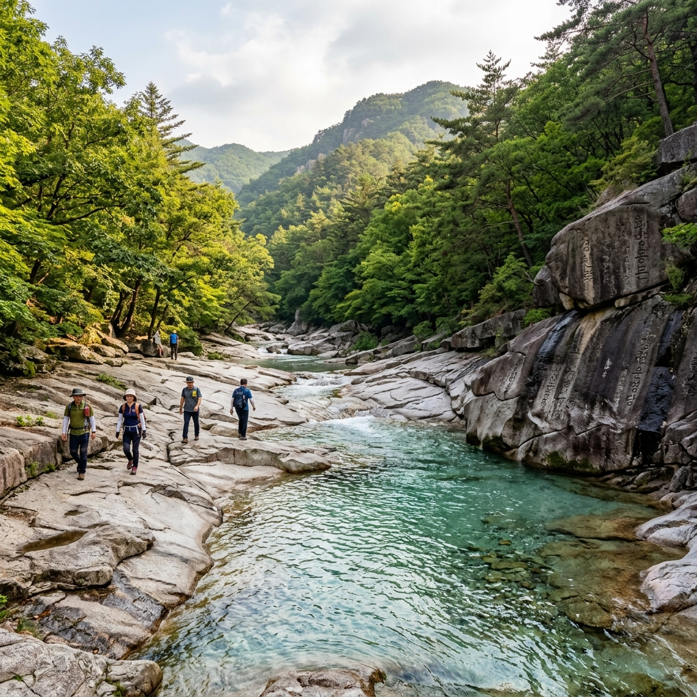
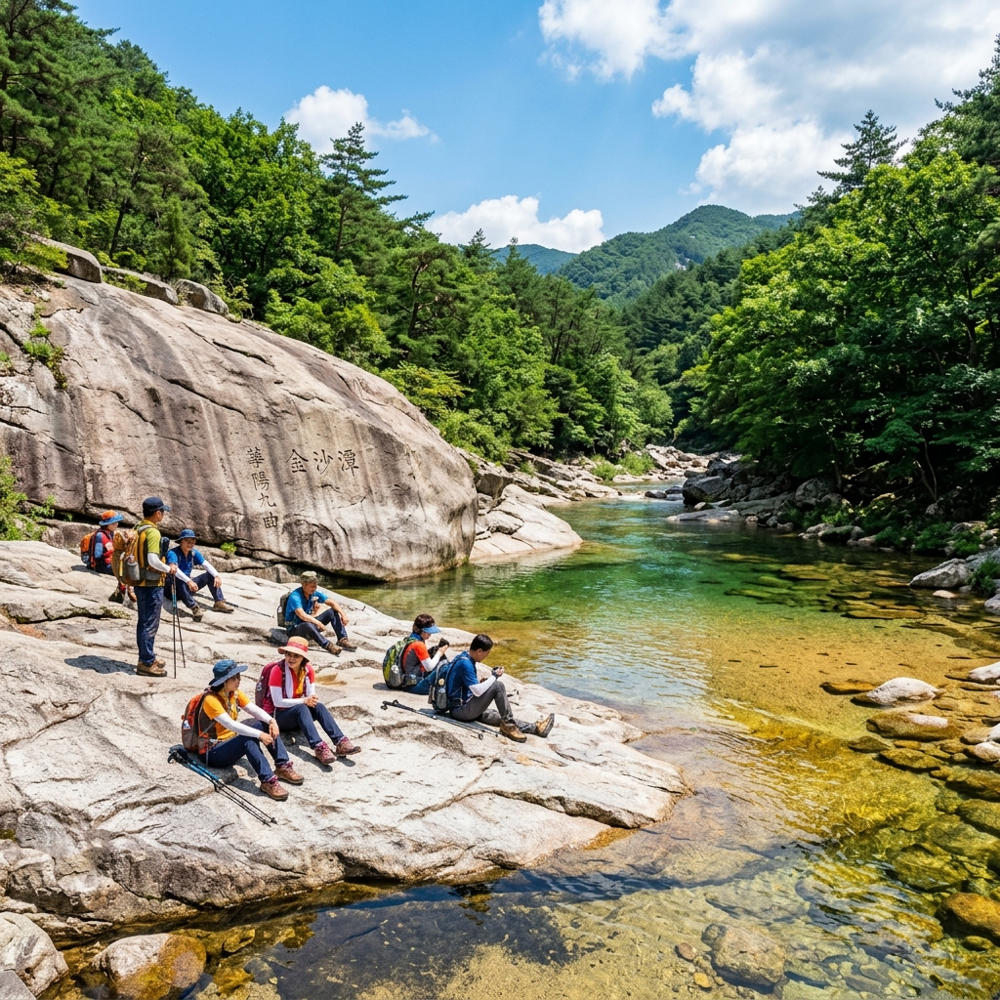
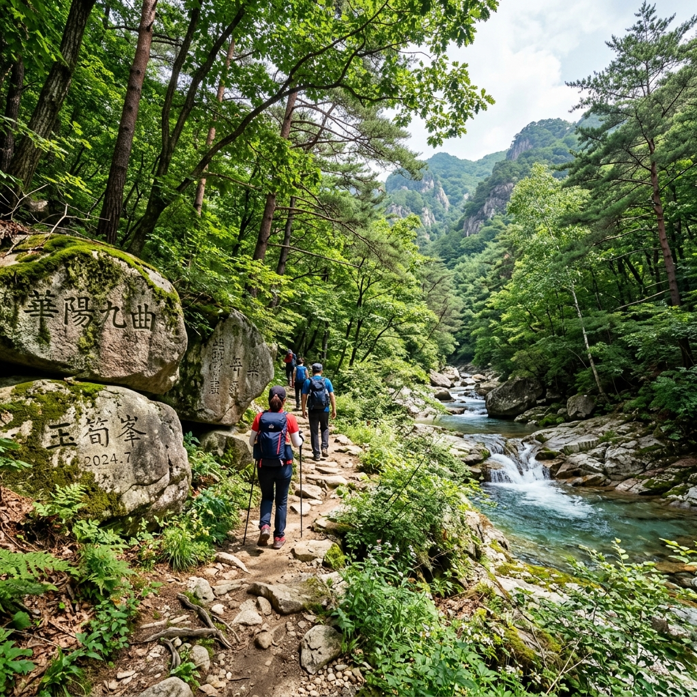

화양구곡은 충북 괴산군 청천면에 있는 계곡으로, 조선 후기 대유학자 우암 송시열이 직접 이름 붙인 아홉 곳의 경승지를 말합니다.
중국 주자(朱子)의 무이구곡을 본떠 만든 이름이고, 바위마다 송시열이 새긴 글씨가 지금도 남아 있습니다. 단순한 계곡이 아니라 유교 문화유산으로서도 의미 있는 장소입니다.
현재는 속리산국립공원 구역으로 관리됩니다. 덕분에 자연 보전이 잘 되어 있어 계곡물이 유난히 맑고 깨끗합니다. 취사·음주·야영은 국립공원 규정에 따라 지정 구역 외에서 제한됩니다.
이 규제 덕분에 방문할 때마다 물이 맑은 상태를 유지한다는 점은, 시끄럽고 쓰레기 많은 일부 계곡들과 비교하면 정말 큰 장점이라고 느꼈습니다.

솔직히 말하면 9곡 전부를 다 돌아본다고 9배 감동인 건 아닙니다. 체력 소모 대비 하이라이트는 제4곡 금사담과 제6곡 능운대 구간이라고 생각합니다.
제1곡 경천벽: 입구 바로 옆에 있어 접근이 쉽습니다. 수직 절벽이 인상적이고 비 온 직후 폭포수가 흘러내리면 아름답습니다.
제4곡 금사담: 화양구곡의 백미라고 불리는 곳입니다. 황금빛 모래가 깔린 연못이라는 뜻인데, 실제로는 맑은 물 아래 밝은 화강암이 황금빛처럼 보이는 장면이 인상적입니다. 주변 너른 암반에서 쉬어가기 좋습니다.
제6곡 능운대: 제4곡에서 더 올라가면 나오는 대형 암반입니다. 올라서면 계곡 전경이 한눈에 보이고, 바람이 시원하게 불어왔습니다.
체력이 남으신다면 계속 올라가셔도 좋지만, 시간이 부족하다면 제4곡을 충분히 즐기고 돌아오시는 것을 추천합니다.
총 탐방로는 약 4.5km이며, 9곡 전체를 왕복하면 약 9km입니다. 경사가 완만해서 등산화가 없어도 걸을 수 있지만, 계곡 구간의 바위가 미끄러울 수 있으니 등산화나 아쿠아슈즈가 있으면 안심입니다.
저는 지인과 천천히 구경하며 제9곡까지 왕복하는 데 총 3시간 20분 정도 소요됐습니다. 사진을 많이 찍고 중간에 30분 쉬었으니 빠르게 걸으면 왕복 2시간 30분도 가능합니다.
중간에 물이나 간식을 살 곳이 없습니다. 입구에서 충분히 보충하거나 직접 챙겨가세요. 생수 2L와 간식은 기본입니다.
여름에는 계곡 구간을 제외하면 그늘이 많아 생각보다 덥지 않지만, 모자와 자외선 차단제는 챙기시기 바랍니다.

자가용으로는 서울에서 경부고속도로 또는 중부고속도로를 타고 청주를 거쳐 괴산 방면으로 들어옵니다. 청주에서 내비 기준 약 40분 추가 소요되며, 서울 강남 기준 총 2시간~2시간 30분 예상하면 됩니다.
대중교통은 서울 남부터미널에서 괴산행 버스를 타고 현지에서 농어촌버스로 환승해야 합니다. 배차가 많지 않아 자가용이 훨씬 편리합니다.
주차장은 입구 근처에 있으며 성수기 주말에는 오전 8~9시에도 빠르게 차는 편입니다. 주차 요금은 소형차 기준 2,000~4,000원 수준이었으나 해마다 다를 수 있습니다. 방문 전 국립공원공단(knps.or.kr)에서 확인하세요.
화양구곡은 속리산국립공원 내에 있으므로 탐방로에서의 취사는 지정 구역 외에 금지됩니다. 물놀이도 지정 구역에서만 허용됩니다.
반려동물은 국립공원 탐방로 출입이 원칙적으로 제한됩니다. 강아지와 함께 방문 계획이라면 사전에 국립공원공단에 문의해 허용 여부를 확인하세요.
이 규제들이 처음엔 불편하게 느껴질 수 있지만, 실제로 가보면 그 덕분에 계곡이 깨끗하고 조용하다는 걸 금방 이해하게 됩니다.
괴산은 화양구곡 외에도 볼거리가 있는 고장입니다.
쌍곡계곡은 화양구곡에서 차로 20분 거리로 또 다른 분위기의 계곡 경치를 즐길 수 있습니다. 쌍곡폭포가 특히 인상적입니다.
수옥폭포는 괴산 연풍면에 있는 높이 20m 폭포로 여름철 물줄기가 시원합니다. 화양구곡에서 차로 30분이면 도착합니다.
괴산을 여행한다면 화양구곡+쌍곡계곡 또는 화양구곡+수옥폭포로 묶어 1박 2일 일정을 짜면 충북 자연을 충분히 즐길 수 있습니다.
화양구곡은 사계절 모두 다른 매력이 있는 장소입니다.
가을(10~11월)에는 계곡 주변 단풍이 절경입니다. 화강암 암반 위에 단풍이 물들면 여름과는 전혀 다른 분위기가 납니다.
봄(4~5월)에는 신록이 탐방로를 초록으로 물들입니다. 봄비 직후에는 계곡 수량이 늘어 더욱 웅장한 풍경을 볼 수 있습니다.
겨울에는 탐방로 일부가 결빙될 수 있으므로 방문 전 국립공원공단에서 탐방로 개방 상태를 확인하시기 바랍니다.
추천하는 분: 조용하고 청정한 계곡에서 걷기 산책을 즐기고 싶은 분, 역사와 자연을 함께 즐기고 싶은 분, 대형 취사 바베큐보다는 도시락 들고 자연을 즐기는 스타일인 분.
비추하는 분: 취사·바베큐를 꼭 즐겨야 하는 분(지정 구역 외 불가), 어린 유아를 동반한 가족(탐방로가 바위 구간이 있어 유모차 불가), 성수기 주말 오전 10시 이후 출발 계획인 분(주차 자리 없음), 대중교통만 이용하시는 분(불편함).
화양구곡은 분명 독특한 매력을 가진 장소입니다. 특히 국립공원 내 잘 보전된 계곡을 조용히 걷고 싶은 분들에게는 수도권 계곡들과는 차원이 다른 경험을 선사합니다.

성수기 주말 오전 8~9시 이전 도착 목표, 물과 간식 충분히 준비, 등산화 또는 아쿠아슈즈 착용, 취사 가능 여부 현장 안내 확인, 반려동물 동반 시 사전 국립공원 문의, 기상 악화 시 당일 방문 재고.
화양구곡은 한 번 가봤다면 두 번 다시 가고 싶어지는 장소입니다. 특히 여름 뙤약볕을 피하면서 맑은 계곡에서 힐링하고 싶다면 이보다 나은 곳을 찾기 어렵습니다.